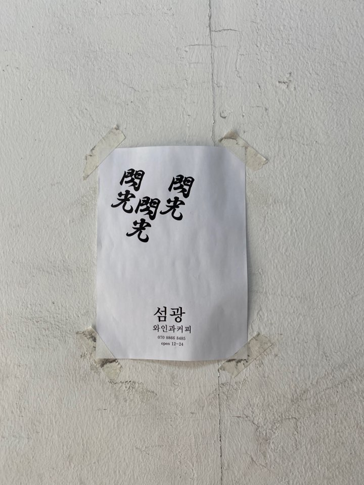
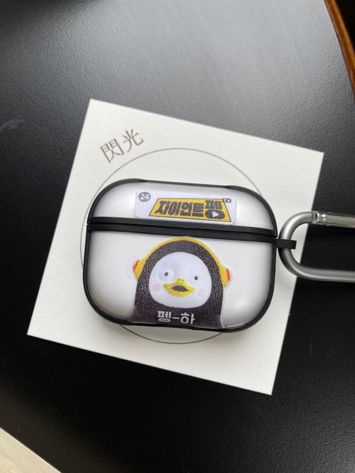
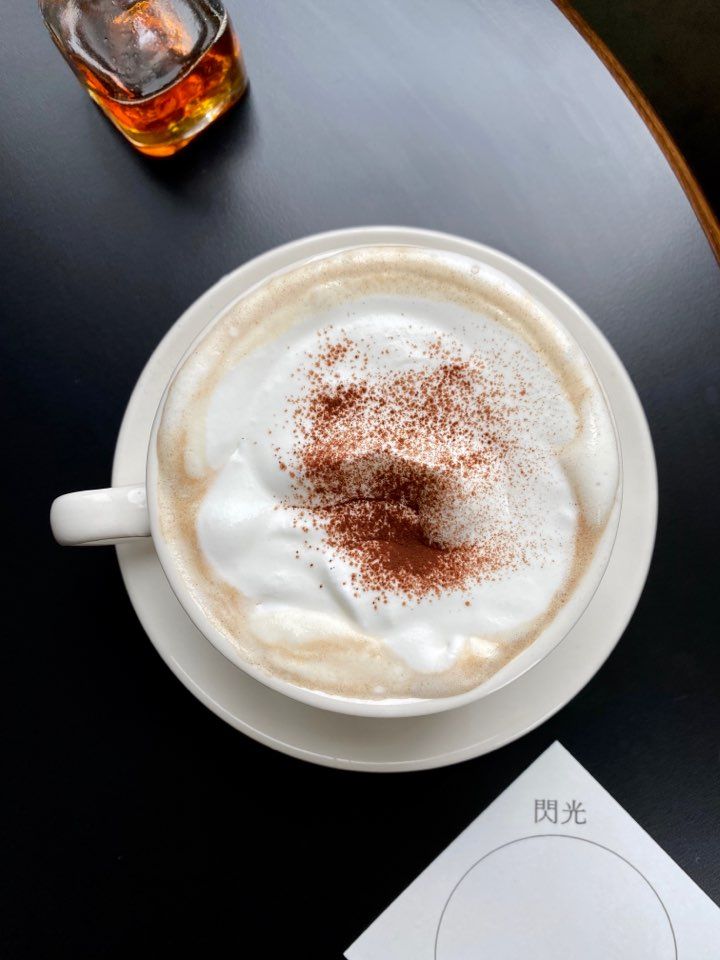
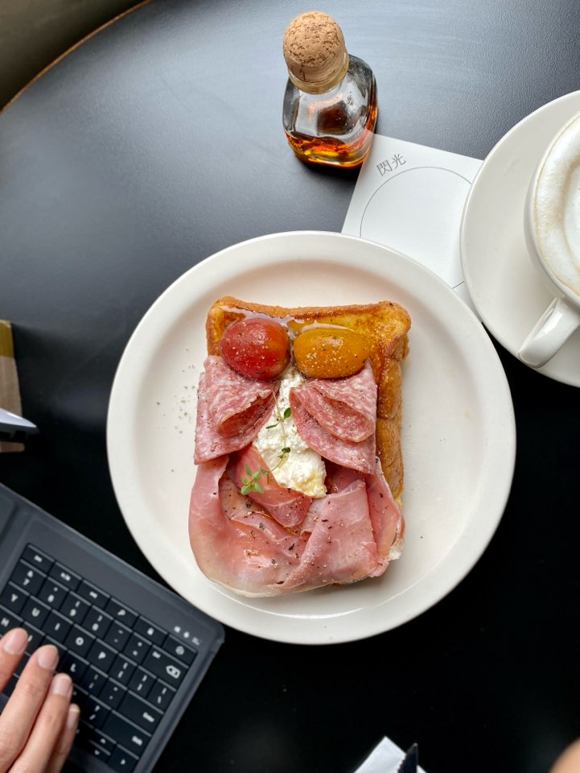
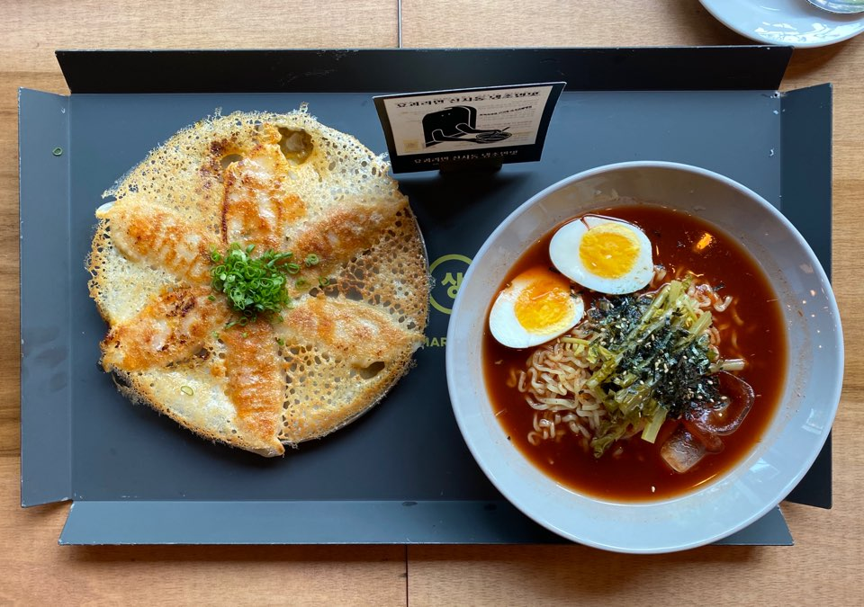

A happy DAY
In many ways, SUNDAYS are sucks.
If I were working in a n offcie somewhere, it would have been my last day of weekend.
but even if I don't, still it's a day I need to spend with my family in a boring Starbucks.
in that way, I'd rather say today fees like a Saturday or even vacation
1st SPOT - SEOMGWANG
   
I recommend to go there in weekdays cos it's super nice without people
Vienna coffee looks nice (and the cream does) but I think filter is nicer.that prosciutto toast is yummy! CHECK MORE
2nd SPOT - GOING MARY

damm, I even wrote a review while I was eating!
GET dancing sala mandu. Get it 5 times cos it so nice.taco tastes in a juicy mandu.
the noodle has a strong spicy and thick paste.
Different to any type of cold spicy noodle. CHECK MORE